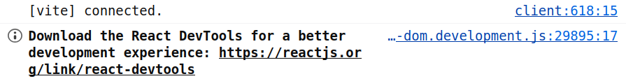

Lektion 1.2 — Teil 1: React Einführung
Einführung & Umgebung
Lernziele
- Verstehen, was React ist und warum es für UI-Entwicklung eingesetzt wird
- Node.js, npm und Vite installieren und konfigurieren
- Ein neues React+TypeScript-Projekt mit Vite erstellen
- Die Projektstruktur und wichtigsten Dateien kennenlernen
- JSX-Syntax verstehen und erste Elemente erstellen
- Den Entwicklungsserver starten und die App im Browser sehen
Was ist React?
React ist eine JavaScript-Bibliothek (kein vollständiges Framework!) zur Erstellung von Benutzeroberflächen. Sie wurde von Meta (damals Facebook) entwickelt und 2013 als Open-Source-Projekt veröffentlicht. Heute gehört React zu den meistgenutzten Frontend-Technologien weltweit.
Das Kernkonzept von React basiert auf drei Säulen:
- Deklarative Programmierung: Du beschreibst WAS die UI darstellen soll – React kümmert sich um das WIE. Anstatt DOM-Elemente manuell zu manipulieren, definierst du den gewünschten Zustand und React aktualisiert die Seite automatisch.
- Komponentenbasiert: Die UI wird in wiederverwendbare, eigenständige Bausteine – sogenannte Komponenten – zerlegt. Jede Komponente hat ihre eigene Logik und Darstellung. Aus kleinen Komponenten lassen sich komplexe UIs zusammenbauen.
- Virtueller DOM: React pflegt intern eine leichtgewichtige Repräsentation des echten DOM. Bei Änderungen berechnet React (Diffing-Algorithmus) zuerst was sich geändert hat und aktualisiert dann nur die betroffenen Teile des echten DOM – das ist sehr effizient.
React ist bewusst als Bibliothek (nicht Framework) konzipiert. Es kümmert sich nur um die View-Schicht. Für Routing, State-Management, Datenabruf etc. kombiniert man React mit spezialisierten Bibliotheken (React Router, Zustand, TanStack Query usw.) – oder man verwendet ein vollständiges Framework wie Next.js, das React als Basis nutzt (Teil 2 dieses Kurses).
Toolchain einrichten
Bevor wir starten, benötigen wir Node.js (mindestens Version 18) und npm. Vite übernimmt das Build-Setup für uns – es ist deutlich schneller als das ältere Create React App und bietet hervorragende TypeScript-Unterstützung.
# Node.js-Version prüfen (>= 18 wird benötigt)
node --version
npm --version
# Neues Projekt mit Vite erstellen
# Das Flag --template react-ts wählt React + TypeScript
npm create vite@latest flugboard -- --template react-ts
# In den Projektordner wechseln und Abhängigkeiten installieren
cd flugboard
npm install
# Entwicklungsserver starten (läuft auf http://localhost:5173)
npm run devVite nutzt native ES-Module im Browser und startet daher in Millisekunden. Create React App (CRA) bündelt beim Start alles – bei größeren Projekten kann das Minuten dauern. Für neue Projekte ist Vite die empfohlene Wahl.
Wenn du die App im Browser startest, siehst du in der Konsole oft den Hinweis, die React Developer Tools zu installieren. Das ist sinnvoll, aber optional. Mit der Erweiterung kannst du Komponenten, Props, State und Re-Renders direkt im Browser inspizieren – sehr hilfreich beim Debugging ab den nächsten Lektionen.
Chrome: React Developer Tools im Chrome Web Store
Firefox: React Developer Tools bei den Firefox Add-ons

VS Code – ESLint-Plugin installieren
Das ESLint-Plugin von Microsoft zeigt Linting-Fehler und Warnungen direkt im Editor an – ohne den Terminal öffnen zu müssen. Probleme werden sofort mit Wellenlinien markiert und per Hover erklärt.
# ESLint-Extension per VS Code-CLI installieren
code --install-extension dbaeumer.vscode-eslintIn VS Code: Ctrl+Shift+X (Windows/Linux) bzw. Cmd+Shift+X (Mac) öffnet den Extension-Marketplace. Suche dort nach ESLint (Herausgeber: Microsoft) und klicke auf Install.
Die Extension ist passiv, solange kein ESLint im Projekt konfiguriert ist –
sobald du später eine .eslintrc-Datei oder
eslint.config.js hinzufügst, greift sie automatisch.
Projektstruktur verstehen
Nach npm create vite@latest entsteht folgende Ordnerstruktur. Es ist wichtig, die Aufgabe
jeder Datei zu kennen:
flugboard/
├── public/ # Statische Assets (favicon, Bilder) – werden 1:1 kopiert
├── src/
│ ├── main.tsx # Einstiegspunkt – rendert <App /> in das #root-Element
│ ├── App.tsx # Haupt-Komponente der Anwendung
│ ├── App.css # Styles speziell für App.tsx
│ ├── index.css # Globale CSS-Styles (wird in main.tsx importiert)
│ └── vite-env.d.ts # TypeScript-Typdefinitionen für Vite (z.B. import.meta)
├── index.html # HTML-Vorlage – enthält <div id="root"></div>
├── package.json # Projektmetadaten, Abhängigkeiten & npm-Scripts
├── tsconfig.json # TypeScript-Konfiguration
└── vite.config.ts # Vite-Konfiguration (Plugins, Build-Optionen)
Die wichtigste Datei zum Start ist src/main.tsx. Sie verbindet React mit dem HTML-Dokument:
// Einstiegspunkt: Verbindet React mit dem Browser-DOM
import { StrictMode } from 'react';
import { createRoot } from 'react-dom/client';
import './index.css';
import App from './App';
// document.getElementById('root') findet <div id="root"> in index.html
// Das Ausrufezeichen (!) sagt TypeScript: "Dieses Element existiert garantiert"
createRoot(document.getElementById('root')!).render(
<StrictMode>
<App />
</StrictMode>
);
// StrictMode aktiviert zusätzliche Warnungen und Checks in der Entwicklung.
// In der Produktionsversion hat StrictMode keinen Einfluss auf das Verhalten.
<StrictMode> ist ein Entwicklungs-Hilfsmittel von React. Es rendert Komponenten
im Entwicklungsmodus zweimal, um Nebeneffekte aufzudecken. In der Produktionsversion
(nach npm run build) wird die Komponente nur einmal gerendert.
JSX verstehen
JSX (JavaScript XML) ist eine Syntaxerweiterung für JavaScript/TypeScript, die es ermöglicht, HTML-ähnlichen Code direkt in TypeScript zu schreiben. JSX wird vom Compiler (Babel oder SWC bei Vite) in gewöhnliche JavaScript-Funktionsaufrufe umgewandelt.
// JSX – was wir schreiben (lesbar, HTML-ähnlich)
const element = <h1 className="title">Hallo Welt</h1>;
// Was der Compiler daraus macht (React.createElement)
const element = React.createElement('h1', { className: 'title' }, 'Hallo Welt');
// Verschachteltes JSX
const card = (
<div className="card">
<h2>FlugBoard</h2>
<p>Wien International</p>
</div>
);
// Ausdrücke in JSX (geschweifte Klammern für JavaScript)
const flughafen = 'Wien-Schwechat';
const anzeige = <p>Flughafen: {flughafen}</p>;
const summe = <p>Summe: {2 + 3}</p>; // Ergibt: "Summe: 5"Wichtige JSX-Regeln
JSX unterscheidet sich in einigen Punkten von HTML. Diese Regeln sind zu beachten:
// 1. className statt class (class ist ein reserviertes Wort in JS)
<div className="container">Inhalt</div>
// 2. Selbstschließende Tags benötigen />
<img src="logo.png" alt="Logo" />
<br />
<input type="text" />
// 3. Nur EIN Root-Element – oder Fragment verwenden
// FALSCH:
// return <h1>Titel</h1><p>Text</p>;
// RICHTIG – Fragment (kein extra DOM-Element):
return (
<>
<h1>Titel</h1>
<p>Text</p>
</>
);
// 4. Kommentare in JSX
return (
<div>
{/* Das ist ein JSX-Kommentar */}
<p>Inhalt</p>
</div>
);
// 5. htmlFor statt for (für Label-Elemente)
<label htmlFor="email">E-Mail:</label>
<input id="email" type="email" />
// 6. Inline-Styles als Objekt (nicht als String)
<div style={{ color: 'red', fontSize: '1rem' }}>Text</div>
Bei Inline-Styles sieht man oft style={{ color: 'red' }}.
Die äußeren Klammern stehen für den JSX-Ausdruck, die inneren für das JavaScript-Objekt.
CSS-Eigenschaften werden in camelCase geschrieben: backgroundColor statt background-color.
Im Kurs gilt: Standardmäßig arbeiten wir mit className + separater CSS-Datei;
Inline-Styles verwenden wir nur für dynamische Laufzeitwerte.
Projektschritt
Statische Fluganzeigetafel
Wir erstellen unsere erste React-App: eine statische Fluganzeigetafel mit hartkodierten Daten.
Noch keine Komponenten, kein State – nur JSX mit klarer Struktur. Das Styling liegt wie in
einer Standard-React-App in App.css und wird in App.tsx importiert.
Ersetze den Inhalt von src/App.tsx und src/App.css
mit folgendem Code:
import './App.css';
const App = () => {
return (
<div className="app-page">
<h1 className="app-heading">✈ FlugBoard L01</h1>
<p className="app-subheading">Flughafen Wien-Schwechat</p>
<section>
<h2 className="section-heading">Abflüge</h2>
<table className="flight-table">
<thead>
<tr>
<th>Flug</th>
<th>Airline</th>
<th>Ziel</th>
<th>Zeit</th>
<th>Status</th>
</tr>
</thead>
<tbody>
<tr>
<td>OS123</td>
<td>Austrian Airlines</td>
<td>London Heathrow (LHR)</td>
<td>10:30</td>
<td>
<span className="status-badge status-boarding">
Boarding
</span>
</td>
</tr>
<tr>
<td>LH456</td>
<td>Lufthansa</td>
<td>Frankfurt (FRA)</td>
<td>11:15</td>
<td>
<span className="status-badge status-delayed">
Verspätet
</span>
</td>
</tr>
<tr>
<td>BA234</td>
<td>British Airways</td>
<td>London Heathrow (LHR)</td>
<td>12:00</td>
<td>
<span className="status-badge status-on-time">
Pünktlich
</span>
</td>
</tr>
</tbody>
</table>
</section>
</div>
);
};
export default App;.app-page {
background: #0d1117;
color: #e6edf3;
min-height: 100vh;
padding: 2rem;
}
.app-heading {
color: #61dafb;
font-size: 2rem;
font-weight: 700;
margin-bottom: 0.25rem;
}
.app-subheading {
color: #8b949e;
font-size: 1rem;
margin-bottom: 2rem;
}
.section-heading {
color: #e6edf3;
font-size: 1.2rem;
font-weight: 600;
margin-bottom: 0.75rem;
}
.flight-table {
background: #1c2128;
border-collapse: collapse;
border-radius: 8px;
overflow: hidden;
width: 100%;
}
.flight-table th {
background: #161b22;
border-bottom: 1px solid #30363d;
color: #8b949e;
font-size: 0.75rem;
font-weight: 600;
letter-spacing: 0.05em;
padding: 0.6rem 1rem;
text-align: left;
text-transform: uppercase;
}
.flight-table td {
border-bottom: 1px solid #30363d;
color: #e6edf3;
padding: 0.7rem 1rem;
}
.status-badge {
border-radius: 4px;
display: inline-block;
font-size: 0.8rem;
font-weight: 600;
padding: 2px 8px;
white-space: nowrap;
}
.status-boarding {
background: #0a2a3a;
color: #61dafb;
}
.status-delayed {
background: #3a2a0a;
color: #d29922;
}
.status-on-time {
background: #1a3a1a;
color: #3fb950;
}
Wir verwenden von Anfang an die übliche React-Struktur mit
import './App.css'. Damit bleibt App.tsx
auf Logik und JSX fokussiert, während das Styling zentral in CSS
gepflegt wird.
Häufige Fehler
class statt className in JSX
In HTML schreibt man class="container". In JSX ist class jedoch ein
reserviertes Schlüsselwort in JavaScript (für Klassen-Definitionen). React verwendet daher
className. Der TypeScript-Compiler meldet sofort einen Fehler.
Verwende immer className statt class in JSX-Ausdrücken.
.ts statt .tsx gespeichert
TypeScript-Dateien mit JSX-Inhalt müssen die Endung .tsx haben. Bei .ts
versteht der Compiler die spitzen Klammern nicht und wirft Syntaxfehler.
Alle Dateien mit JSX-Inhalt (also mit <-Tags) müssen .tsx heißen.
Eine Komponente darf nur ein Root-Element zurückgeben. Mehrere nebeneinander stehende Elemente führen zu einem Syntaxfehler: "Adjacent JSX elements must be wrapped in an enclosing tag."
Verwende ein Fragment <>...</> oder <React.Fragment>...</React.Fragment>
als Wrapper, wenn du kein zusätzliches DOM-Element erzeugen willst.
export default vergessenWenn eine Komponente nicht exportiert wird, kann sie nicht in anderen Dateien importiert werden. Der Importfehler lautet dann: "The requested module does not provide an export named 'default'."
Jede Komponenten-Datei benötigt export default KomponentenName; am Ende.
Aufgaben
Erstelle ein neues Vite-Projekt namens flugboard mit dem React-TypeScript-Template.
Starte den Entwicklungsserver und überzeuge dich, dass die App im Browser erreichbar ist.
- Führe
npm create vite@latest flugboard -- --template react-tsaus - Installiere die Abhängigkeiten mit
npm install - Starte den Server mit
npm run dev - Ersetze den Standard-Inhalt in
App.tsxdurch eine einfache Begrüßung mit dem Flughafen-Namen - Zeige mindestens: einen Titel, einen Untertitel und eine kurze Beschreibung
Füge unterhalb der Abflugtabelle eine zweite Tabelle für Ankünfte (Arrivals) mit 3 hartkodierten Flügen hinzu. Orientiere dich am Datenmodell aus der Kursübersicht.
- Spalten: Flugnummer, Airline, Herkunftsflughafen, geplante Ankunftszeit, Terminal, Status
- Verwende diese 3 Flüge: EK789 (Emirates, Dubai, 09:45, gelandet), TK567 (Turkish Airlines, Istanbul, 13:20, verspätet), WZ112 (Wizz Air, Budapest, 15:30, pünktlich)
- Färbe den Status je nach Wert unterschiedlich ein (gelandet = grau, verspätet = gelb, pünktlich = blau)
Erkläre in einem Block-Kommentar am Anfang von App.tsx die Unterschiede zwischen
JSX und HTML. Nenne mindestens 5 konkrete Unterschiede mit je einem kurzen Codebeispiel.
- Tipp: Denke an Attribute-Namen, Kommentare, Ausdrücke, Styles, Root-Element
- Der Kommentar soll als kurze Referenz dienen – klar und prägnant formuliert
Füge in der Titelzeile eine statische Anzeige der aktuellen Uhrzeit hinzu (noch kein State,
also aktualisiert sie sich nicht automatisch). Verwende new Date().toLocaleTimeString('de-AT')
direkt im JSX-Ausdruck. Positioniere die Uhrzeit rechts neben dem Titel (z.B. mit Flexbox und
justifyContent: 'space-between').
Denkübung: Warum aktualisiert sich die Uhrzeit nicht, wenn du die Seite nicht neu lädst? Was bräuchte man dafür? (Antwort: State + useEffect – kommt in Lektion 6!)